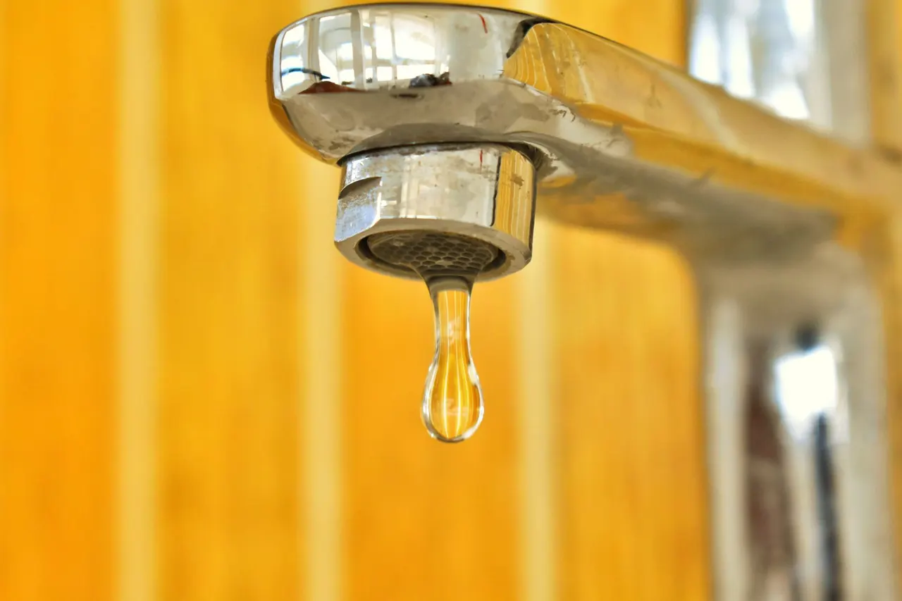
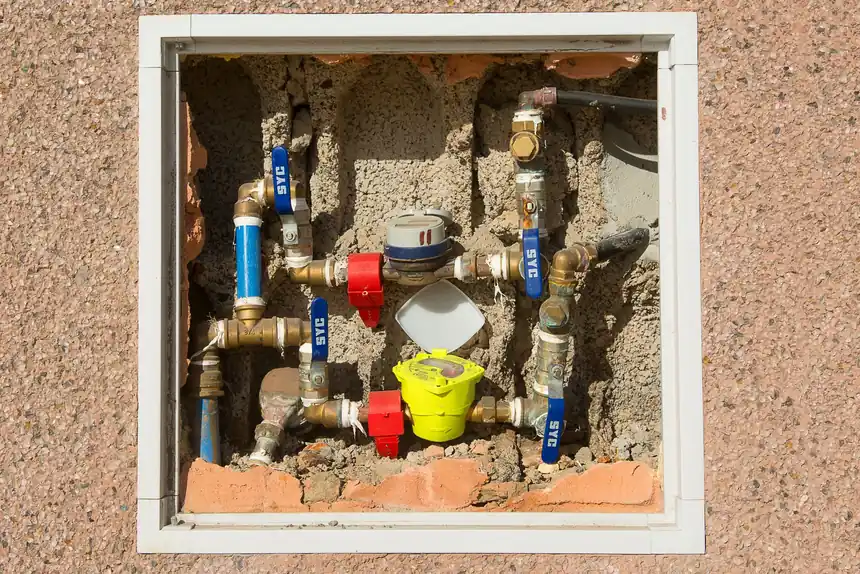

About Leak Detection Redlands CA: Trusted Leak Detection in Redlands
For Leak Detection Redlands CA homeowners call when a water bill spikes or a slab feels warm, we are the licensed team that finds the source. Since 2020 we have run acoustic, thermal and tracer gas gear through Redlands homes and businesses.
Our story
How We Started in Redlands
We started this company in 2020 after years of watching Redlands homeowners get talked into slab demolition before anyone proved where the water was coming from. One of our founders was a plumber working the older tracts near downtown and the University of Redlands, where 1950s copper pipe and citrus-era galvanized lines were failing at the same time. He bought a Fluke acoustic unit and a Sewerin tracer gas detector, and started doing one thing: finding the leak before anyone picked up a jackhammer. That is still the whole job. If you have been searching for straight answers about leak detection Redlands CA, that is what this page is for.
Today we run a local leak detection Redlands CA crew of four technicians, two fully equipped trucks, and a diagnostic kit that includes a thermal imaging camera, a video pipe inspection camera, and a pressure testing kit. We work Redlands addresses from 92373 and 92374 to the 92359 and 92346 edges, plus the surrounding San Bernardino County neighborhoods. We are a Redlands leak detection company, not a franchise dispatch center. When you call, you get someone who has crawled under a house on Cypress Street or traced a pool line off Sunset Drive.
Practical standards, local accountability.
Leak Detection Redlands CAWhat guides the work
What We Stand For
Our mission is simple: prove the leak, price the repair, and leave the property drier than we found it. We do not sell pipe replacement as a first option. We run an ultrasonic leak detector or a moisture meter, show you the reading, and tell you what the pipe is actually doing. As a local leak detection Redlands CA business, we would rather lose a big ticket than sell you a repipe you did not need. You get the number, the location, and a clear next step before any work starts.
Our values
How We Work
Four things shape every call we run in Redlands, from a 2 a.m. gas smell to a slow pool leak that has been soaking a yard for a month. None of them are slogans. They are the rules our technicians actually follow on site.
Find It First
We do not quote a repair until we have located the leak. On a typical slab leak call in Redlands, that means an acoustic leak detection pass, then a thermal imaging camera scan to confirm the hot spot, then a pressure testing kit to isolate the line. You see the evidence on screen. If we cannot prove it, we do not dig.
Explain the Reading
A high water bill is not a diagnosis. When we test a line, we show you the pressure drop, the moisture meter reading, or the tracer gas hit, and we say it in plain language. Redlands has a lot of mature landscaping and clay soil, so root intrusion and slow sewer line leaks are common. You should know which one you have.
Same-Day Answers
Most Redlands leak detection services calls get a same-day visit, and we keep 24/7 phone coverage for active water and gas leaks. We carry common repair parts on the truck, including copper pipe, PEX tubing, PVC pipe, and pipe sealant. If a pinhole leak can be fixed on the first visit, we fix it.
Clean Work, Clear Price
We lay drop cloths, cap every line we open, and test before we leave. Pricing is quoted upfront, and we honor it. If you have been reading Redlands leak detection company reviews trying to find someone who will not pad the invoice, that is the standard we hold ourselves to on every job.
The people behind the work
Who You Will Meet
Our Redlands CA leak detection team is four technicians and two office staff. Between us we carry a California Contractor License (C-36 Plumbing), Backflow Prevention Certification, and current OSHA training. One tech came out of commercial plumbing, one ran pool service for years, and two grew up in San Bernardino County. We keep Fluke, RIDGID, Milwaukee, DeWalt, and Bosch tools on the trucks because they survive the heat and the dust. We are EPA WaterSense aware on every fixture and irrigation call, and we follow IAPMO and ASSE guidance on pipe and backflow work. We are licensed, insured, and bonded. If you want to know who owns the leak detection company in Redlands, it is the same two people who answer the phone when a line lets go at midnight.

Ways we can help
Leak Detection Services We Run in Redlands
We handle the full range of leak detection services San Bernardino County homes need, from a dripping slab to a pool losing an inch a day. Every job starts with a real diagnosis, not a guess. If you have been searching for leak detection Redlands CA near me and want a crew that shows up with the right tools, this is the lineup.
Explore every service01
Water Leak Detection
We trace hidden water leaks behind walls, under floors and in the yard using acoustic listening and moisture meters. If your water bill jumped and the meter keeps spinning with everything off, we find where it is going and stop it.
View service 02Slab Leak Detection
A warm spot on the floor or a hairline crack that keeps coming back usually means a slab leak. We use thermal imaging and pressure testing to confirm it, then route the repair through the least invasive path so you keep your flooring.
View service 03Pool Leak Detection
Losing more than two inches of water a week points to a pool leak, not evaporation. We pressure-test the plumbing, check the shell and fittings, and use leak detection dye to separate a structural leak from a line leak.
View serviceNotes from local customers
What Redlands Customers Say
Our water bill jumped from $70 to $210 in one cycle and I had no idea why. They pressure-tested the whole house, found a slab leak in the hallway, and rerouted the line in a day. Floor stayed intact. I watched the meter stop moving before they left.
Called at 11 p.m. with water coming up through the garage floor. A tech was here in about 40 minutes, shut it down, and came back the next morning to make the repair. Straight answers, no runaround on price.
Pool was losing about three inches a week and two other companies told me it was evaporation. These guys pressure-tested the lines and found a cracked return fitting. Fixed it for less than I expected. Pool holds water now.
Sewer smell in the backyard for weeks. They ran a camera down the line and showed me the root intrusion on the screen. Gave me two repair options with prices. I picked the spot repair and it has been fine since.
Smelled gas near the water heater and got out of the house. They came out fast, found the leak at the connection with their detector, and had it fixed and retested within a couple hours. Professional and calm about it.
Where we work
One local team. A lot of ground covered.
Before the visit
Leak Detection Redlands CA Questions
Here are the questions we get most from Redlands homeowners, answered straight. If yours is not here, call us and we will give you a real answer, not a script.
Still wondering?+19097294657
Most leak detection jobs in Redlands run $189 to $549 depending on what we are locating. A basic pressure test and locate on a single line sits at the low end. A slab or wall locate with thermal imaging and a pipe locator runs higher. We quote flat rate before we start, so the price you hear is the price you pay.
The best leak detection company in Redlands is the one that confirms the leak with real tools before opening anything. Ask whether they use acoustic leak detection, thermal imaging and pressure testing on every call. We have been doing this since 2020, we are licensed under a California Contractor License (C-36 Plumbing), and we show you the readings.
Yes. Our line is open 24/7 for active leaks, and we answer with a real person. A burst line or gas smell at 2 a.m. gets a tech dispatched right away. For non-emergency leaks, most Redlands jobs get a same-day slot, and we cover the 92373, 92374 and 92346 ZIP codes.
Check three things: a current California Contractor License (C-36 Plumbing), the tools they bring, and whether they quote flat rate before work starts. A crew that shows up with only a wrench is guessing. We carry RIDGID pipe locators, Fluke moisture meters and Milwaukee inspection cameras on every call.
Shut off the main valve, then check the meter. If the dial keeps spinning with everything off, you have a live leak. Call us at +19097294657 and we will pressure-test the line and find it. If you smell gas, leave the house first and call from outside. Do not flip switches on the way out.
Your next step is waiting
Call Leak Detection Redlands CA Today
We are a licensed, insured leak detection company serving Redlands since 2020, and we answer the phone 24/7 for active leaks. If your water bill jumped or you smell gas, call (909) 729-4657. We will find it, show you the proof, and quote the fix before we start.
Start with the basics
Call Us for Leak Detection
Reach us at +19097294657 any time, day or night. We answer live, ask a few questions about what you are seeing, and get a tech headed your way. Most Redlands calls get a same-day slot, and emergencies get dispatched right away. You can also email info@leakdetectionredlandsca.com with photos of the damage.